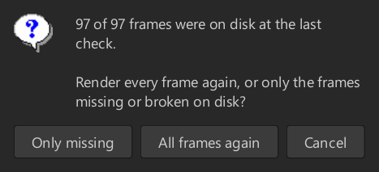
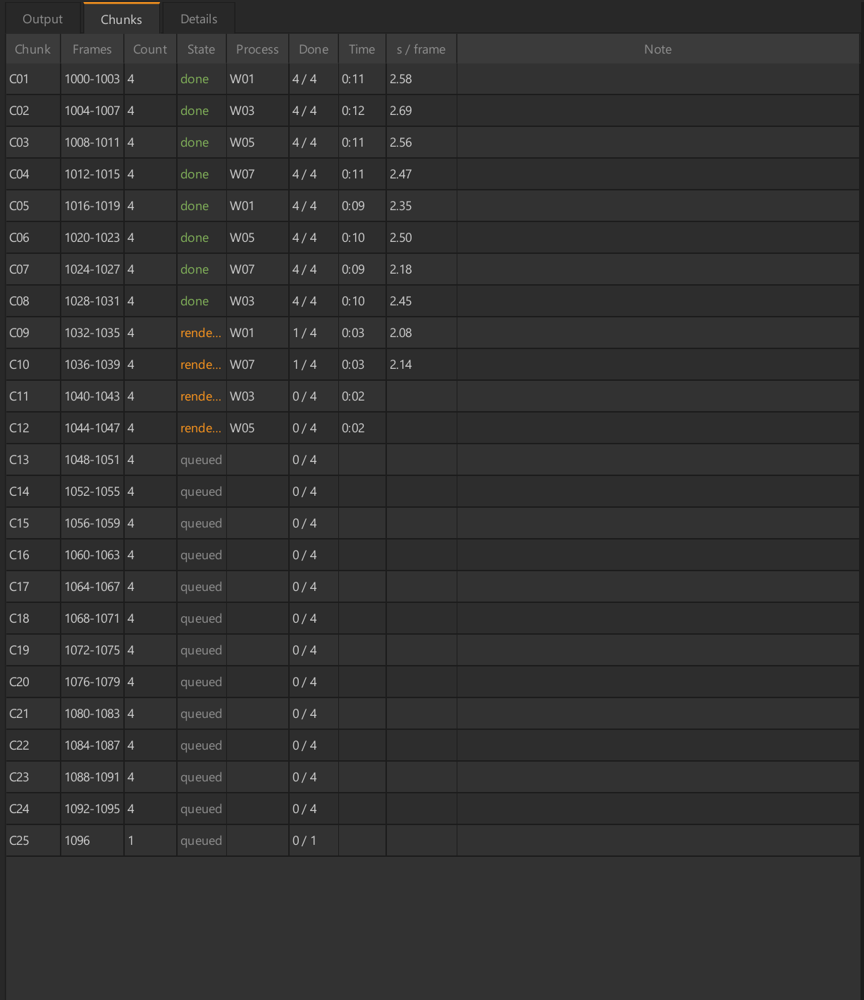
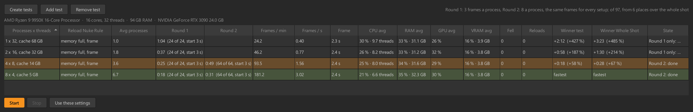

Быстрый локальный рендер для Nuke. Рендер делится на части (чанки), которые одновременно считают несколько процессов Nuke. После рендера JKrender проверяет каждый кадр на диске.
Содержание
1Как работает JKrender
2Установка и запуск из Nuke
3Карта окна
4Карточки рендеров и строка управления
5Плитки и карта кадров
6Панель Output: просмотр и кадры
7Панели Chunks и Details
8Панели Workers и Log
9Панель System
10Вкладки Job и Settings
11Как настроить рендер
12Test this script
13Контроль RAM и VRAM
14Проверки, звуки, сбои, данные
15Мышь и клавиши: шпаргалка
16Если что-то не работает
1 Как работает JKrender
Обычный рендер в Nuke идёт в одном процессе, который кадр за кадром считает весь скрипт. Но один Nuke редко загружает все 32 потока процессора. Поэтому JKrender запускает несколько процессов Nuke рядом. Каждый открывает скрипт только один раз, а затем получает куски работы, так называемые чанки: например, 10 кадров подряд.
Три числа, от которых зависит скорость
Processes
Сколько процессов Nuke работает одновременно (для всех рендеров вместе). Больше процессов делают больше за раз, но и занимают больше RAM и VRAM.
Threads
Сколько потоков процессора получает каждый процесс (Nuke -m). Processes × Threads должно давать примерно число потоков ПК (здесь 32).
Cache
Лимит кэша одного процесса в ГБ (Nuke -c). На деле процесс занимает больше. Сколько, показывает System › RAM.
По умолчанию 8 процессов × 4 потока. Тяжёлые композитинг-скрипты, которые один Nuke уже загружает сам (Defocus, Denoise), часто быстрее на 4 × 8 и занимают вдвое меньше RAM. Скриптам, у которых растёт VRAM, нужно меньше процессов. Что лучше для твоего скрипта, измерит Test this script (глава 12).
Где что хранится
Что
Где
Настройки
~/.nuke/JKrender/settings/settings.json (у каждого пользователя свои). Старые версии хранили их в ~/.jkrender; JKrender сам переносит их при первом запуске.
Логи рендеров
~/.nuke/JKrender/log/: одна папка на рендер (снимок скрипта, job, лог каждого процесса Nuke и report.json). Старше 15 дней удаляются; копии скриптов неоткрытых рендеров через час упаковываются (.gz).
Скачанные библиотеки
~/.nuke/JKrender/lib/: numpy и OpenEXR (просмотр EXR) и ffmpeg (видео). Новая версия JKrender их не трогает.
Результаты тестов
~/.nuke/JKrender/settings/test_results
Отрендеренные кадры
Туда, куда их отправляет Write. JKrender никогда не удаляет их сам, только кнопкой Delete.
2 Установка и запуск из Nuke
Установка (один раз)
1Скопируй всю папку JKrender в %USERPROFILE%\.nuke\. Папка может называться иначе (zip с GitHub даёт JKrender-main): всегда переименуй её в JKrender.
2Добавь в ~/.nuke/init.py строку (при необходимости создай файл):
nuke.pluginAddPath("./JKrender")
3Перезапусти Nuke. При первом запуске JKrender одним вопросом спросит, скачать ли то, чего нет в Nuke:
Что
Размер
Для чего
numpy и OpenEXR
около 15 МБ
просмотр EXR и проверка пикселей
ffmpeg и ffprobe
около 77 МБ
проверка и воспроизведение видео (MOV, MP4, MXF)
Скачивание идёт в фоне в JKrender/lib; Nuke тем временем можно пользоваться. ffmpeg — это LGPL-сборка с github.com/BtbN/FFmpeg-Builds, проверенная по списку SHA-256 релиза. Он предлагается, только если на ПК его ещё нет: ffmpeg из PATH или из WinGet используется в первую очередь.
Если откажешься, рендер работает дальше, только без просмотра EXR или без проверки и воспроизведения видео. Вопрос появится снова, если удалить lib/DECLINED (numpy, OpenEXR) или lib/DECLINED_FFMPEG (ffmpeg) и перезапустить Nuke. Если скачать не удалось, Nuke напишет почему и как установить вручную (winget install ffmpeg).
Nuke 16 и новее открывают окно в собственном Python Nuke. В Nuke 13–15 есть только PySide2: установи Python 3.10 или новее и pip install PySide6 psutil, JKrender найдёт его сам (или задай JKRENDER_PYTHON). Windows, macOS и Linux.
Новая версия: JKrender предложит её при открытии (What's new, Update, Later) или через Settings › Check for updates; папки lib, log и settings остаются. Потом перезапусти Nuke.
Меню JKrender в Nuke
Пункт
Что делает
Render Selected Write(s) Ctrl+Alt+R
Отправляет выбранные Write (или Group с Write внутри) в JKrender. Каждый Write получает свою карточку. Если окно ещё не открыто, оно откроется.
Open Renders Folder
Открывает папку с логами рендеров.
Если скрипт не сохранён, появится вопрос Save it and render?: рендерится сохранённая версия. Write, в пути которого нет номера кадра (sh010.exr вместо sh010.####.exr), отклоняется: каждый кадр перезаписывал бы один и тот же файл. Скрипты Nuke Non-commercial и Indie (.nknc, .nkind) рендерятся в том же режиме.
Что происходит после отправки
Снимок (snapshot): рендерится скрипт в том виде, каким он был при отправке. В Nuke можно сразу работать и сохранять дальше, идущий рендер это не затрагивает. Чтобы отрендерить изменённый скрипт, отправь его из Nuke ещё раз: новая отправка заменит старую карточку.
Вопрос о кэше: если открыт какой-то Nuke, Render спрашивает, очистить ли его буферы, кэш воспроизведения и кэш Blink, чтобы рендеру хватило памяти. Ответ по умолчанию No, рендер стартует в любом случае; Settings › Clear Nuke cache without asking очищает его без вопроса. Дисковый кэш не трогается.
3 Карта окна
Наверху карточки рендеров и строка управления, под ними числа и карта кадров. Остальное занимают три панели: слева Output / Chunks / Details, справа вверху Workers / Log и справа внизу System / Job / Settings / Donation / Author. Границы между панелями можно перетаскивать.
1
2
3
4
5
6
7
8
9
10
1Карточки рендеров: один Write (рендер) на карточку. Щелчок выбирает его.
2Когда будут готовы все рендеры.
3Render, Pause, Stop для выбранного рендера.
4Slate, Framerange, Processes, Threads, Cache и Chunk этого рендера (только чтение).
5Плитки с числами: кадры, время, скорость, процессы, проверки.
6Карта кадров по чанкам. Щелчок по кадру показывает его.
7Output: просмотр кадра с воспроизведением.
8Output: фильтр, проверки, папка, удаление и список кадров.
9Workers: временная шкала каждого процесса Nuke.
10System: нагрузка ПК и таблица процессов. Рядом вкладки Job, Settings, Donation и Author.
4 Карточки рендеров и строка управления
Карточка рендера
Каждый отправленный Write — одна карточка: номер, имя скрипта, файл, который рендерит Write (sh010_comp_v003.####.png; подсказка показывает нод Write и полный путь), полоса прогресса и состояние (Ready, Waiting, Rendering, Paused, Checking output, afterRender hooks, Done, Failed, Stopped). Клик выбирает карточку, и всё окно показывает этот рендер. Shift+клик выбирает несколько карточек; Render, Pause и Stop тогда действуют на все, Render again и на готовые (спросит один раз за все). Крестик × закрывает рендер, кадры на диске остаются. Красная карточка: в рендере ошибка (не удался, Nuke не отрендерил кадр, битые кадры, ошибка Nuke, сбой render hook), даже во время рендера; что именно, скажет подсказка карточки. Падение процесса Nuke карточку не красит: чанк рендерится заново в новом Nuke, а подсказка карточки скажет, сколько раз Nuke упал. Процесс, закрытый из-за RAM или VRAM, тоже не ошибка.
Рендеры делят один бюджет процессов. Рядом идут не больше, чем указано в Settings Max renders at once (по умолчанию 3); процессы делятся между ними (8 → 4 + 4 → 3 + 3 + 2). Видео (MOV, MP4…) получает свой отдельный процесс сверх этого и в Max renders не считается (глава 6). Номера карточек идут по месту: закроешь карточку — остальные снова пронумеруются с 1.
Карточка справа: ALL RENDERS DONE IN
Когда должны закончиться все идущие и ждущие рендеры при скорости, с которой ПК рендерит сейчас. Ниже: во сколько закончатся, сколько уже идут и сколько кадров осталось. Когда все пройдут, карточка показывает ALL RENDERS TOOK: сколько всё заняло.
Строка управления
Элемент
Что делает
Render
Запускает выбранный рендер (или несколько выбранных). Кадры, которые уже в порядке на диске, пропускает. После Stop рендер продолжает с того места, где остановился (Resume). Если у рендера есть кадры на диске (готовый, остановленный или с кадрами из прошлого), он спрашивает: Only missing рендерит только недостающие или повреждённые кадры (остальные на карте тёмно-зелёные), All frames again рендерит всё заново, Cancel — ничего. После Stop прогона All frames again сначала предлагает Go on (N left): рендерятся и кадры, до которых этот прогон не дошёл.
Pause
Замораживает все процессы Nuke рендера посреди кадра (процессор освобождается, память остаётся занятой). Повторный щелчок продолжает.
Stop
Останавливает рендер, завершает его процессы и удаляет недописанные кадры и временные файлы Nuke. Готовые кадры остаются.
Slate
Номер слейта: кадр перед Framerange, когда слейт включён (вкладка Job).
Framerange
Кадры этого рендера: диапазон из Nuke, если ты не изменил его во вкладке Job.
Processes · Threads · Cache · Chunk
С чем идёт рендер. Меняется во вкладке Job › Processes and Chunks; число процессов и во время рендера, правой кнопкой в System.
Цветная полоса
Результат рендера, см. ниже.
Цветная полоса с результатом
Цвет
Что значит
Пример
Зелёный
Готово, все кадры на диске и прошли проверку.
Done in 2:06. All 97 frames are on disk and pass the check.
Жёлтый
Готово, но что-то не проверено или выглядит подозрительно (кадры не проверены, подозрительно маленькие; слейт маленьким не считается).
frames not checked · 2 suspiciously small
Красный
Ошибка: рендер не удался, повреждённые кадры или Check pixels нашёл проблему (NaN, чёрный кадр…).
2 broken frames · Output: Problems shows them
Серый
Идёт: Checking pixels…, ожидание свободных процессов и т. п.
Waiting: 1 render already uses the PC
5 Плитки и карта кадров
Плитка
Что показывает
Frames
Готовые / все кадры рендера, проценты и сколько рендерится сейчас.
Elapsed
Сколько идёт рендер (без пауз).
Remaining
Оценка оставшегося времени при текущей скорости.
Speed
Кадры в секунду и в минуту, все процессы вместе. Лучшее число для сравнения настроек.
Frame time
Сколько длится один кадр в одном процессе и сколько кадров считается одновременно (× N at once).
Nuke processes
Сколько процессов рендерит / сколько работает и сколько мест Processes занимают все рендеры. Видео сверху как + N for movies; если открыты только видео, N for movies.
Check frames
Проверка файлов: отсутствующие, пустые, обрезанные, нечитаемые и подозрительно маленькие кадры.
Check pixels
Проверка пикселей в R, G и B (EXR, PNG, JPEG, TIFF, DPX): чёрные, пустые и одноцветные кадры, кадры, совпадающие с другим, и кадр, чей размер или битность отличаются от остальных. В EXR также NaN, inf и сжатие; его остальные слои (AOV, служебные пассы) не проверяются, а кадры только из них показывают no RGB. У видео вместо этих двух одна плитка, Check video: ok, check it, broken или checking, пока читаются его кадры.
Карта кадров
Каждый прямоугольник — один кадр, сгруппированы по чанкам (C01, C02…). Щелчок по кадру открывает его в просмотре; его подсказка показывает состояние, процесс, время, проверки и секунды beforeFrameRender / afterFrameRender из Write. Цвета:
ждёт (queued)
рендерится
готово
на диске: пропущен (Only missing), или после All frames again пока старый кадр, пока не записан новый
подозрительно маленький
не удался / повреждён
Render again: всё или только недостающее

Если у рендера есть кадры на диске и ты нажмёшь Render again, он спросит: Only missing (по умолчанию) рендерит только недостающие или повреждённые кадры; остальные пропускаются и на карте тёмно-зелёные. All frames again рендерит всё заново, Cancel — ничего. Фильм (MOV, MP4) не спрашивает: фильм — один файл и рендерится целиком. Если все кадры уже на диске и проходят проверку, ничего не рендерится, а Log пишет Nothing to render.
Если через Shift выбрано несколько карточек, он спрашивает один раз за все (например, 27 of 27 frames of 3 renders…). Кадры, которые были на диске уже при открытии или остались от прогона до Stop, тёмно-зелёные. В Output фильтр Rendered показывает тогда только кадры этого прогона, All — все.
Двойной щелчок: возврат ко всему кадру. Если он уже целиком, просмотр разворачивается на все три панели; назад клавишей Esc.
EXR показывается в своём формате: bbox меньше формата стоит на своём месте на чёрном, overscan обрезается. Правый щелчок › Show the whole format выключено: просмотр заполняет один bbox.
Space запускает и останавливает воспроизведение. Никогда не нажимает кнопку, поэтому не останавливает рендер.
Полоса под просмотром
Предыдущий кадр · Play/Pause (воспроизводит готовые кадры по кругу с fps скрипта) · следующий кадр · ползунок по всем кадрам · номер кадра · развернуть (просмотр на три панели, Esc назад). Под полосой: путь, размер, разрешение, каналы и результаты проверок кадра.
Кнопки
Элемент
Что делает
Фильтр
All: все кадры сразу: отрендеренные, пропущенные, повреждённые, not on disk и те, что ещё будут рендериться, а также кадры на диске вне Framerange. Остальные фильтры — его части: Rendered: только кадры этого прогона. Problems: ошибки, подозрительно маленькие кадры и находки проверки пикселей. Framerange: только кадры выбранного диапазона.
Check frames
Заново проверяет файлы всех кадров: существует, не пустой, целый и читаемый, не намного меньше остальных. Кадр, которого ещё нет на диске, остаётся not on disk и не считается повреждённым.
Check pixels
В фоне проверяет RGB каждого кадра (EXR, PNG, JPEG, TIFF, DPX): чёрные, пустые и одноцветные кадры, кадры, совпадающие с другим в любом месте последовательности, другой размер или битность; в EXR также NaN, inf и сжатие, но не остальные слои. Слейт, в точности совпадающий с первым кадром (на нём ничего нет), показывается красным same as 1000. Около 0,1 с на кадр 4K. Только сообщает, ничего не перерендеривает.
Open folder
Открывает папку с результатом.
Delete
Удаляет отрендеренные кадры с диска: все (по умолчанию) или заданный диапазон. Сначала спрашивает.
Список кадров
Столбцы: Frame, State, Chunk, Worker (какой процесс его считал), Time, Size, Check frames, Check pixels. С фильтром All все кадры в списке с самого начала, а их состояние меняется по ходу рендера. После Render again кадры не исчезают: они остаются как on disk, queued again со старым размером и временем (их можно смотреть и воспроизводить), пока новый рендер их не перезапишет. Кадры на диске вне выбранного Framerange остаются в списке с пометкой not in Framerange.
Правая кнопка на кадре (или на нескольких выбранных): Render this frame / batch: перерендеривает только эти кадры (если рендер идёт, они добавляются в него). Delete this frame / batch: удаляет их с диска (только когда рендер не идёт).
7 Панели Chunks и Details
Chunks

Одна строка на чанк: Chunk (C01…), Frames (диапазон), Count, State, Process (кто его считает), Done, Time, s / frame и Note (почему чанк повторялся, try 2 of 3 и т. п.). Кадр, который не удался трижды, каждый раз в новом Nuke, бросается один, в собственном чанке; остаток его чанка рендерится дальше.
Правая кнопка:Render again (чанк заново), Show process log (лог процесса, который его считал), Delete frames from chunk (только когда рендер не идёт).
Details
Всё о рендере в одном месте: скрипт и его снимок, Write и выходные пути, формат, fps, диапазон, версия Nuke, с какими Processes × Threads × Cache он идёт, время и пути к логам. Пригодится, когда нужно точно знать, что рендерилось.
MOV / MP4 / MXF: вместо списка кадров показан один файл видео с подробностями (кодек, профиль, fps, разрешение, таймкод, число кадров против настроек Write) и плеер с лупой. Кнопки Check video, Open folder, Delete video. После рендера ffmpeg читает и каждый кадр: чёрные, одноцветные и замёрзшие кадры (такие же, как предыдущий) — ошибка, красным, как у секвенции; заново из-за них ничего не рендерится. Видео нельзя разделить, поэтому его рендерит один процесс со всеми потоками. Этот процесс работает сверх, рядом с местами Processes: стартует сразу, даже когда идут другие рендеры, и секвенция рядом не теряет ни одного процесса. В Max renders at once не считается; у нескольких видео у каждого свой процесс. Когда рядом рендерится секвенция, процесс видео назван по местам (W09 при Processes 8), иначе он получает W01; в System у него своя строка. Ждёт он только тогда, когда память выше Reload Nuke at. Правила памяти закрывают его в самую последнюю очередь, потому что видео начиналось бы заново.
8 Панели Workers и Log
Workers: временная шкала процессов
Одна строка на процесс Nuke (W01–W08), время слева направо. серый: Nuke стартует и открывает скрипт (в том числе при замене на свежий Nuke, с подписью again: reload). зелёный: готовые чанки (с номером чанка). оранжевый: чанк, который рендерится сейчас. фиолетовый: render hooks, beforeRender между загрузкой скрипта и первым чанком, afterRender после последнего чанка (Settings › Show render hooks in Workers). Чанки других рендеров приглушены (Settings › Dim other renders in Workers). Сразу видно, стоит ли процесс, перезапускается ли или долго открывает скрипт. Пустое время между двумя рендерами вырезается, а внутри рендера — отрезок от 30 с без единого процесса: остаётся лишь узкий промежуток, и рендеры сохраняют ширину. Оси времени нет; сколько длился чанк, скажет его подсказка.
Правая кнопка на строке процесса открывает то же меню, что и в панели System (глава 9).
Наведение мыши на чанк показывает его кадры и сколько из них отрендерено, чем чанк закончился (every frame rendered, stopped after frame 1012 for a reload (VRAM over 95 %), stopped mid-chunk: GPU frozen, Nuke crashed (exit code …)) и что процесс сделал потом (then: on to C07, closed: RAM 98 %). Остаток прерванного чанка возвращается в очередь, и его доделывает другой процесс.
Log
Сообщения JKrender и вывод каждого процесса Nuke со временем. Фильтр: All, JKrender only (только сообщения JKrender), Errors and warnings. Open log folder открывает папку с логами этого рендера: снимок скрипта, job.json и worker_NN.log каждого процесса.
Каждый процесс сообщает в логе, через сколько он был готов, с разбивкой на старт Nuke и открытие скрипта. Если старт длится 15 с и больше, JKrender предупреждает. Медленный старт обычно связан с лицензией или стартовыми скриптами пайплайна, а не с самим скриптом.
Log также пишет, сколько длились render hooks (W01 ran the beforeRender hooks (2) in 0.31 s, покадровые хуки Write суммируются в конце рендера), и предупреждает, когда несколько процессов ждали в один и тот же момент: обычно диск, и тогда больше процессов рендер не ускорят.
9 Панель System
Плитки и графики
Плитки одинаковой ширины, в порядке CPU (нагрузка и потоки), RAM (X of Y GB – cache Z GB: сколько занято и сколько из этого держит кэш Nuke; подсказка разбивает, сколько берут процессы Nuke и сколько остальной ПК), GPU (нагрузка карты), VRAM (память карты), Disk write, Disk read и Network. График Load показывает CPU, RAM, GPU и VRAM в %, график Disk / network — передачу в МБ/с. CPU threads: по столбику на поток процессора, видно, загружен ли весь ПК.
Таблица процессов
Одна строка на место из Processes, в том числе на пустое место, где процесс сейчас не работает (закрыт, ждёт память), плюс строка для каждого идущего видео. Когда открыты только видео — строка на видео.
Столбец
Значение
Process
Номер процесса (W01…).
Script · File
Скрипт, который рендерит процесс, и файл, который он пишет.
State
Что процесс делает и что сделает дальше, например busy → reload (VRAM over 95 %), closed (GPU frozen), wait: Reload at 85 % of VRAM, running afterRender hooks. Все тексты — в таблице главы 13. Подсказка ждущего места говорит, чего именно оно ждёт.
CPU
Сколько потоков процессора процесс реально загружает (из скольких).
RAM · Cache
Реальная память процесса и его кэш Nuke против лимита.
GPU · VRAM
Нагрузка видеокарты и VRAM этого процесса. Любая карта: NVIDIA, AMD или Intel Arc (в Linux NVIDIA и AMD).
Frames · Avg frame · Last frame
Сколько кадров сделал, сколько они шли в среднем и последний.
Script load
За сколько Nuke запустился и открыл скрипт.
Uptime · Chunk · Chunks
Сколько работает, на каком чанке и сколько сделал.
PID · Frame · Peak RAM
Скрытые столбцы: ID процесса в Windows, текущий кадр, максимум RAM.
Клик по заголовку таблицы открывает список столбцов: галочкой столбец показывается или скрывается, стрелками меняется порядок. Столбцы можно и перетаскивать за заголовок. Ширины и порядок сохраняются при закрытии окна.
Правая кнопка на процессе (в таблице или на строке в Workers) открывает меню справа. При нескольких идущих рендерах у Add process to есть подменю с выбором рендера.
Пункт меню
Что делает
Pause / Resume
Останавливает или продолжает только этот процесс.
Close after this chunk
Процесс доделывает свой чанк и закрывается (State busy → closes by me, затем closed by me), даже приостановленный или уже закрывающийся из-за памяти. Processes уменьшается на 1 и так остаётся.
Close
Закрывает процесс сразу. Его чанк возвращается в очередь. На его место потом может встать другой.
Work on › render
Переводит процесс на другой идущий рендер (State busy → move to и имя Write), после кадра или чанка по Reload after.
Add process
Запускает ещё один процесс (и кликом в пустое место таблицы). Processes увеличивается на 1 и так остаётся. Правила памяти действуют дальше.
Start again · Remove process
У закрытого процесса: запускает его снова или удаляет (и пустое место без процесса). Удалённый не вернётся, а Processes уменьшится на 1.
Show process log
Открывает лог этого процесса.
10 Вкладки Job и Settings: все настройки
Настройки сохраняются сразу. У каждой есть подсказка, у важных — серая заметка под ними.
Вкладка Job: Job (рендер, выбранный сверху)
Настройка
Что делает
По умолч.
Slate frame
Включено: каждый рендер дополнительно рендерит кадр слейта перед своим Framerange (1001-1020 → слейт 1000). Рядом с переключателем — номер слейта выбранного рендера.
вкл.
Framerange
Кадры рендера, например 1001-1100 или 1001-1010,1050. У каждого рендера свой. Пустое поле возвращает диапазон из Nuke. Подтверждается Enter или кликом в другое место. Во время рендера заблокировано.
из Nuke
Test
Test this script… измеряет настройки для этого ПК и показывает самую быструю (глава 12).
—
Вкладка Job: Processes and Chunks (для всех рендеров)
Настройка
Что делает
По умолч.
Processes
Процессы Nuke для всех рендеров вместе. У видео процесс сверх этого.
8
Threads
Потоки на процесс (-m).
4
Cache
Лимит кэша Nuke на процесс в ГБ (-c). Сколько процесс берёт на деле, видно в System › RAM. Слишком маленький кэш замедляет рендер: Nuke выбрасывает и пересчитывает.
по RAM
Chunk: Auto / Fixed
Auto: около 4 чанков на процесс, не больше 10 кадров (46 кадров при 8 процессах → 2, 96 → 3, 320+ → 10). Fixed: размер справа. Действует на ещё не начатые чанки.
Auto
Smaller chunks at the end
К концу рендера чанки уменьшаются до отдельных кадров, так что все процессы заканчивают примерно одновременно.
вкл.
Processes, Threads и Cache во время рендера заблокированы. Число процессов во время рендера меняется правой кнопкой в System (Add process, Close after this chunk, Remove process).
Вкладка Settings: General
Настройка
Что делает
По умолч.
Start render on open
Рендер начинается сразу после открытия окна, без нажатия Render.
выкл.
Start next render when one ends
Когда рендер закончится или не удастся, сам запускается следующий ещё не запущенный рендер по порядку карточек. Остановленный тобой рендер ничего не запускает.
выкл.
Clear Nuke cache without asking
Render каждый раз без вопроса очищает кэш открытых Nuke (буферы, кэш воспроизведения, кэш Blink). Выкл.: сначала спрашивает.
выкл.
Sound when a render ends
Звук по окончании рендера, когда пройдут включённые проверки. Другой звук при ошибке, битых кадрах или проблеме в пикселях. Остановленный рендер молчит.
вкл.
Check frames when a render ends
После рендера (и после Stop) один раз каждый отрендеренный кадр: есть ли, не пустой ли, целый и читаемый, не сильно ли меньше остальных. Выключено: битый кадр считается готовым, пока не нажмёшь Check frames.
вкл.
Check pixels when a render ends
Сразу после проверки кадров в фоне проверяет RGB всех кадров (чёрные, одноцветные, одинаковые, другой формат; в EXR NaN и inf; у видео чёрные, одноцветные и замёрзшие кадры). Только сообщает.
вкл.
Check pixels when a render opens
Та же проверка кадров, уже лежащих на диске, сразу при открытии рендера. Render её останавливает.
вкл.
Max renders at once
1: рендеры идут друг за другом, следующий начинает загружаться, пока предыдущий доделывает последние чанки. 2–3: идут рядом и делят процессы (в сумме не быстрее, но кадры каждого шота видны рано). Видео не считаются.
3
Show processes of all renders
Workers и System показывают процессы всех рендеров. Выключено: только выбранного.
вкл.
Dim other renders in Workers
На шкале времени светятся чанки выбранного рендера, остальные приглушены.
вкл.
Show render hooks in Workers
Хуки beforeRender и afterRender скрипта — фиолетовые блоки на шкале Workers. Выключено: не рисуются; они выполняются в любом случае, а Log их записывает.
вкл.
Delete old render logs
При открытии JKrender удаляет папки логов старше заданного числа дней. Кадры — никогда. Копии скриптов неоткрытых рендеров упаковываются (.gz, пятая часть размера) и распаковываются при следующем рендере.
вкл., 15 дней
Check for updates сразу спрашивает GitHub о новейшей версии (JKrender спрашивает и при каждом запуске); более новая открывает окно обновления. Reset to defaults возвращает всё к значениям по умолчанию, включая столбцы таблиц.
Вкладка Settings: Performance and Optimization
Настройка
Что делает
По умолч.
Use GPU
Запускает Nuke с --gpu, чтобы GPU-ноды (Kronos, ZDefocus, Denoise…) считала видеокарта. У каждого процесса своя VRAM. Действует на процессы, запущенные с этого момента.
вкл.
Reload Nuke
Процесс закрывает Nuke и открывает скрипт в новом, с RAM и VRAM снова на старте; это стоит одной загрузки скрипта. When memory is full: когда RAM или VRAM в течение Reload Nuke after выше Reload Nuke at, и только процесс, держащий больше всех, по одному. After every chunk: каждый процесс после каждого чанка.
When memory is full
Reload after
Когда происходит перезагрузка из-за памяти. Frame: сразу после кадра, который процесс только что закончил и записал; остаток его чанка возвращается в очередь для других, ничего не теряется, и память свободна в пределах одного кадра. Chunk: после всего чанка; кадры чанка остаются в одном процессе (нода, читающая соседние кадры, найдёт их в кэше). Так же идут передача места другому рендеру, Work on и закрытие при полной памяти. After every chunk и Close after this chunk — всегда после чанка.
Frame
Reload Nuke at
RAM % и VRAM %. Если память в течение Reload Nuke after держится на этом значении или выше, процесс, который держит её больше всех, перезагружает Nuke. Закрытые места возвращаются только ниже него.
RAM 95 %, VRAM 95 %
Reload Nuke after
Сколько RAM или VRAM должна держаться на Reload Nuke at или выше, прежде чем процесс с наибольшей памятью перезагрузится (1–600 с). Короче — память возвращается раньше; дольше — меньше загрузок скрипта, когда память лишь касается порога.
10 с
Kill at
RAM % и VRAM %. Память почти полна: один процесс закрывается сразу, посреди кадра. Его недописанный кадр удаляется, а чанк возвращается в очередь. Никогда не ниже Reload Nuke at, поэтому перезагрузка всегда приходит первой. Понизь, если ПК зависает раньше.
RAM 98 %, VRAM 98 %
Поля VRAM работают только с включённым Use GPU. JKrender следит за памятью всегда; выключить это нельзя. Глава 13 описывает все правила и времена.
Вкладки Donation и Author
Donation: ссылки, чтобы поддержать автора, если JKrender экономит тебе время (пока PayPal). Author: Jan Kanta, ссылки на LinkedIn и GitHub.
11 Как настроить рендер
Рекомендуемый порядок для нового или тяжёлого скрипта:
VRAM растёт с каждым кадром; больше процессов на карту не поместится.
VRAM +1,7 ГБ на кадр → 1 × 32
Как понять, что настройка неудачная
Мало памяти
System › RAM у Reload Nuke at, в State wait: Reload at … of RAM или closed (RAM 98 %), процессы закрываются и запускаются снова (серые блоки в Workers). Решение: меньше процессов с большим числом потоков или меньший Cache.
Полная видеокарта
VRAM у 95 %, в State часто busy → reload (VRAM over 95 %), closed (VRAM 98 %) или closed (GPU frozen). Если это повторяется, Log напишет, что меньше процессов с большим числом потоков может быть быстрее (сам ничего не меняет). Решение: меньше процессов (Test this script покажет сколько) или выключить Use GPU.
Простаивающий CPU
CPU threads в основном пустые, а у RAM есть запас. Решение: добавь процесс (правая кнопка › Add process) или увеличь Threads.
Долгое открытие скрипта
Серые блоки в Workers длинные, Script load высокий. При старте Nuke спорят за лицензии и стартовые скрипты. Решение: с более длинными чанками это меньше заметно; с самим скриптом обычно не связано.
Лучшая мера — плитка Speed (кадры в минуту). Сравнивай её между настройками на одном скрипте или доверь это Test this script.
12 Test this script

Готовый тест: зелёная строка самая быстрая, оранжевая вторая. Winner test показывает, насколько дольше шёл тест с остальными, Winner Whole Shot — то же для всего шота.
Кнопки наверху
Create tests смотрит, какой это компьютер (строка под кнопками: CPU, ядра и потоки, у Intel производительные и энергоэффективные ядра, RAM, видеокарта), и создаёт 7 настроек от 1 процесса со всеми потоками до стольких процессов, сколько выдержит ПК: каждому процессу не меньше 4 потоков и не меньше 4 ГБ кэша. На 32 потоках и 94 ГБ: 1×32, 2×16, 3×10, 4×8, 5×6, 6×5, 8×4. Свыше 64 потоков процесс получает не больше 64 (одна группа процессоров в Windows). Заменяет всё в таблице.
Add test добавляет свою настройку (Processes, Threads, Cache, Reload Nuke и Reload after), Remove test удаляет выбранные. Правая кнопка на строке: Edit test. Свои тесты запоминаются. Правило каждой настройки — в столбце Reload Nuke Rule сразу после Processes x threads: memory full, frame, memory full, chunk или every chunk.
Cache каждой настройки — RAM для Nuke (без резерва для Windows), делённая на число процессов, минус 4 ГБ, которые процесс берёт помимо кэша. Что сейчас запущено, не важно.
Строка над таблицей говорит, сколько кадров берёт тест: Round 1: 3 frames a process, Round 2: 8 a process, the same frames for every setup.
Как идёт тест
Кадры берутся из 6 мест по всему шоту (от первого кадра до последнего), в каждом по несколько кадров подряд. Все настройки в раунде рендерят одни и те же кадры.
Round 1: каждая настройка коротко, 3 кадра на процесс настройки с наибольшим числом процессов (24 кадра на 32 потоках), не больше 3 минут. Round 2: две самые быстрые (и любая в пределах 5 % от лучшей) ещё раз, с 8 кадрами на процесс настройки с наибольшим числом процессов (8 процессов → 64 кадра), не больше 6 минут. Так в тесте видны и растущая память, и Reload Nuke, а не только первые кадры. Настройка в 1,5× медленнее лучшей останавливается; после двух таких большие числа процессов пропускаются.
Winner test: насколько дольше шёл тест, чем у самой быстрой (те же кадры, со стартом Nuke). Winner Whole Shot: оценка всего шота = время теста + оставшиеся кадры со скоростью Frames / min. Старт оплачивается один раз, более медленная скорость — на каждом кадре, поэтому на длинном шоте разница растёт (например, тест +0:10, весь шот +0:43). Подсказка ячейки показывает оба времени.
Frames / min считается, когда процессы уже идут: старт Nuke и первый кадр каждого процесса не учитываются; в длинном рендере они бывают только раз. Frames / s — то же в секунду.
Столбцы: Reload Nuke Rule, Avg processes (сколько процессов в среднем рендерило), Round 1, Round 2 (время раунда, кадры, старт), Frames / min, Frames / s, Frame, CPU / RAM / GPU / VRAM avg, Fell (упавшие процессы), Reloads (сколько раз Nuke перезагружался), Winner test, Winner Whole Shot, State. Щелчок по заголовку сортирует, столбцы можно растягивать и перемещать.
Use these settings переносит зелёную строку в Job и Settings, вместе с Reload Nuke и Reload after. Кадры идут в тестовую папку и удаляются; hook knobs Write в тесте не запускаются, а afterRender — вовсе. Таблицы остаются в ~/.nuke/JKrender/settings/test_results.
Окно Add test (и такое же Edit test по правой кнопке).
Во время теста ничего другого рендериться не должно: тест измерял бы два рендера, борющихся за ПК. Рядом с рендером тест не запустится.
13 Контроль RAM и VRAM
JKrender следит за памятью постоянно, чтобы Windows не начала свопить, а видеокарта не заполнилась. Правила общие: они не опираются ни на какое число для конкретного ПК или скрипта, только на проценты в Settings и на то, сколько процессы реально берут. Они действуют для каждого места, но всегда по одному процессу.
Правила
Правило
Когда
Что происходит
Reload Nuke When memory is full
RAM или VRAM в течение Reload Nuke after (без настройки 10 с) на Reload Nuke at или выше (одного замера мало).
Только процесс, держащий больше всех того, чего не хватает, закрывается после кадра (Reload after: Frame) или чанка и открывает скрипт в новом Nuke. Тот стартует через 3 с, если память ниже порога возврата; иначе его место ждёт. Следующая перезагрузка — только когда новый Nuke отрендерит первый кадр, а память всё ещё высока. Последний работающий процесс стартует всегда.
Reload Nuke After every chunk
После каждого чанка.
Каждый процесс перезагружает Nuke после каждого чанка. Не на последних чанках рендера: новому нечего было бы делать.
Kill at
RAM или VRAM достигает Kill at.
Один процесс закрывается сразу. Если какие-то процессы ещё запускаются (без кадра), закрывается наименее загруженный из них: он ещё ничего не сделал. Иначе — тот, что держит больше всех, чтобы хватило закрыть один. Видео и процесс, запущенный вручную, — в последнюю очередь. VRAM Kill at пропускается, если закрытие не опустит карту ниже Kill at (VRAM держат другие программы); Log пишет это каждые 2 минуты.
GPU frozen
VRAM от 90 % и все работающие процессы, кроме одного (минимум 2), без CPU 15 с и не меньше 2× времени кадра; или нет кадра 2,5× обычного времени кадра, минимум 45 с.
Nuke ждёт полную карту. Закрывается процесс, запущенный последним (видео — в последнюю очередь), его чанк возвращается в очередь. Следующее такое закрытие — не раньше чем через 15 с.
Правило 1.3
Закрытое место 5 с ждёт память, а память всё ещё выше порога, ниже которого оно возвращается.
Процесс, держащий больше всех того, чего не хватает, перезагружается, если с первого чанка вырос не меньше чем в 1,3× (Nuke держит память, которая ему уже не нужна). Скрипт, которому память просто нужна, не трогается. Когда память ниже порога, место возвращается само и ничего не перезагружается.
Возврат места
Через 5 с после закрытия; RAM и VRAM ниже порога возврата 5 с подряд.
Порог возврата — Reload Nuke at или ниже: Kill at минус один процесс наибольшего размера, какого процессы достигали в этом рендере (до тех пор Cache + 4 ГБ). Места возвращаются по одному: следующее — после первого кадра вернувшегося, пока память сдерживает места. Место, освобождённое закончившимся рендером или видео, возвращается сразу.
Все времена и пороги
Что
Значение
Где меняется
Reload Nuke at (RAM, VRAM)
95 %, 95 %
Settings › Performance and Optimization
Kill at (RAM, VRAM)
98 %, 98 %
Settings, никогда ниже Reload Nuke at
Сколько память должна держаться выше Reload Nuke at
10 с
Settings › Reload Nuke after (1–600 с)
Старт нового Nuke после перезагрузки
3 с
фиксировано
Правило 1.3: ожидание места / рост процесса
5 с / 1,3×
фиксировано
GPU frozen: от VRAM
90 %
фиксировано
GPU frozen: без CPU
15 с и 2× время кадра
фиксировано
GPU frozen: нет кадра
2,5× время кадра, мин. 45 с
фиксировано
Между двумя закрытиями GPU frozen
15 с
фиксировано
Возврат места: после закрытия / память свободна подряд
5 с / 5 с
фиксировано
Интервал между запусками Nuke
0,3 с
фиксировано
Попыток кадра, прежде чем его бросить
3 (каждая в новом Nuke, в каждом по 3 попытки)
фиксировано
Тексты в столбце State
State
Что значит
loading · idle · busy · paused
Nuke запускается и открывает скрипт · ждёт чанк · рендерит · на паузе.
quitting
Nuke закрывается.
running afterRender hooks
Выполняет хуки afterRender рендера, один раз в конце; потом закрывается.
busy → reload (VRAM over 95 %)
Память в течение Reload Nuke after выше Reload Nuke at, и этот процесс держит больше всех: после кадра или чанка перезагрузит Nuke.
busy → reload (1.3 rule)
Место ждёт память, а этот процесс вырос в 1,3×: перезагрузится.
busy → reload
Reload Nuke: After every chunk.
quitting → reload (1.3 rule)
Закрывается для перезагрузки, в скобках почему.
busy → closes (RAM full) · (VRAM full)
Память сдерживает места: процесс закроется после кадра или чанка.
busy → closes by me
Ты выбрал Close after this chunk.
busy → move to Write2
Переходит на другой рендер (Work on, или его место получает рендер, начавшийся рядом).
busy → another render
Его место получает другой рендер.
closed (reload)
Закрыт для перезагрузки, новый Nuke сразу стартует.
closed (RAM 98 %) · closed (VRAM 98 %)
Закрыт правилом Kill at.
closed (GPU frozen)
Закрыт, потому что карта зависла.
closed by me · closed
Закрыл ты · закрыт без причины со стороны JKrender (рендер закончился).
wait: 5 s
Место может вернуться через 5 с.
wait: Reload at 85 % of VRAM (2 starting)
Место вернётся, когда VRAM упадёт ниже 85 %; два процесса ещё разгоняются, и JKrender держит для них место.
wait: VRAM ok, checking
Память ниже порога, проверяется, что она там продержится 5 с.
wait: W03 1st frame
Ждёт, пока W03 отрендерит первый кадр, чтобы было видно, сколько берёт процесс.
coming back
Место как раз запускается снова.
Log записывает каждое ожидание: A place waits for RAM: it comes back under 85 % (now 97 %…), RAM 84 %: under 85 %, a place comes back once it stays there 5 s и The places waiting for RAM are back after 5:04, 7 s after it dropped under the mark.
Лимита VRAM на процесс не существует. Cache (-c) ограничивает только RAM-кэш Nuke. Память видеокарты одного процесса ограничить нельзя: Windows этого не умеет, а настройка Blink cache в Nuke в рендере не действует (измерено). Поэтому JKrender управляет VRAM числом процессов и Reload Nuke.
14 Проверки, звуки, сбои и данные
Проверка результата
Рендер с обрезанным кадром (1030) и чёрным кадром (1031), оба найдены вручную через Check frames и Check pixels: красная полоса, красные кадры на карте, фильтр Problems показывает только их.
Проверка
Когда
Что ищет
Check frames
После рендера и после Stop (можно выключить) и кнопкой. Всегда при открытии рендера и перед Render.
После рендера, при открытии (можно выключить) и кнопкой.
R, G и B в EXR, PNG, JPEG, TIFF и DPX: чёрные, пустые и одноцветные кадры, кадры, совпадающие с другим, пустой слейт, другой размер и битность. В EXR также NaN, inf и сжатие; остальные слои не проверяются (кадр только из них: no RGB). Другие форматы: только одинаковые файлы.
Movie check
Для MOV, MP4 и MXF, после рендера и кнопкой Check video.
Кодек, профиль, fps, разрешение, таймкод и число кадров по сравнению с настройками Write; при включённом Check pixels также чёрные, одноцветные и замёрзшие кадры (такие же, как предыдущий), как ошибка.
Звук после рендера
После рендера проверки идут в порядке Check frames → Check pixels; звук раздаётся, когда пройдут включённые (если обе выключены — сразу после рендера).
Весёлый звук: всё в порядке. Звук ошибки: рендер не удался, есть повреждённые кадры или проверка пикселей нашла проблему. Вручную остановленный рендер молчит.
Если упал процесс Nuke
Его недописанный кадр удаляется, а чанк возвращается в очередь. Кадр, который завершается ошибкой, пробуется снова в том же Nuke (если Nuke потом молчит и ничего не пишет, как при Write без каналов, сразу дальше), потом в новом Nuke, не больше 3 раз; только тогда бросается один этот кадр, а остаток чанка рендерится дальше. Из-за падения карточка не краснеет; её подсказка говорит, сколько раз Nuke упал. В Workers подсказка чанка говорит Nuke crashed (exit code …).
Render hooks пайплайна
Hook knobs у Write и то, что пайплайн добавляет через nuke.addBeforeRender / nuke.addAfterRender, выполняются так, будто весь диапазон рендерит один Nuke: afterRender один раз, когда все кадры на диске, в процессе, который отрендерил последний чанк (nuke.thisNode() — это Write); beforeRender один раз в каждом Nuke перед его первым кадром; beforeFrameRender / afterFrameRender на каждом кадре. Хук, который собирает что-то кадр за кадром, видит только кадры своего процесса. Хук со сбоем делает карточку красной; traceback — в логе процесса.
Если JKrender упадёт
Карточки вернутся при следующем открытии JKrender (например, со следующим рендером, отправленным из Nuke). То, что есть на диске, учитывается, а оставшиеся процессы Nuke завершаются. Рендер, который шёл, ждёт Render и затем дорендеривает недостающее. Если закрыть окно обычно, ничего не возвращается.
Данные рендера
Каждый рендер записывает в свою папку логов report.json: CPU, RAM и видеокарта этого ПК, настройки, скорость, пики памяти, закрытия из-за лимитов, старт Nuke, открытие скрипта и типы нод в скрипте. В нём нет имён скриптов, путей и ошибок; скрипт узнаётся только по ID, одинаковому во всех его версиях. Если наткнёшься на ошибку, отправь папку логов рендера.
15 Мышь и клавиши: шпаргалка
Где и что
Результат
Ctrl+Alt+R в Nuke
Отправляет выбранные Write в JKrender.
Щелчок по карточке рендера
Выбирает рендер; всё окно показывает его данные.
Shift + щелчок по карточкам
Выбирает несколько рендеров для Render, Render again, Pause, Stop.
Щелчок по кадру на карте кадров
Открывает кадр в просмотре.
Space
Воспроизвести / остановить просмотр (никогда не останавливает рендер).
Колесо / перетаскивание в просмотре
Масштаб / сдвиг изображения.
Двойной щелчок в просмотре
Весь кадр; если он уже целиком, большой просмотр.
Правый щелчок в просмотре
Show the whole format: EXR в своём формате или один его bbox.
Esc
Выход из большого просмотра.
Правая кнопка на кадре (Output)
Render this frame / batch, Delete this frame / batch.
Мышь на чанке (Workers)
Его кадры, чем чанк закончился и что процесс сделал потом; над фиолетовым блоком — render hooks и сколько они длились.
Правая кнопка на чанке (Chunks)
Render again, Show process log, Delete frames from chunk.
Правая кнопка на процессе (System, Workers)
Pause, Close after this chunk, Close, Remove process, Work on, Add process, Start again, Show process log.
Правая кнопка по пустому месту в System
Add process, Remove process.
Щелчок по заголовку таблицы System
Выбор и порядок столбцов.
Перетаскивание границы панелей
Меняет размер панелей (сохраняется).
Framerange + Enter
Подтверждает новый диапазон (вкладка Job).
Готовый рендер: зелёная полоса, карточка справа вверху показывает, сколько длились рендеры.
16 Если что-то не работает
Проблема
Что делать
Процессы Nuke долго стартуют (30–50 с)
Обычно это старт Nuke (лицензия, стартовые скрипты пайплайна), пока ПК рендерит. Log показывает разбивку Nuke started in … / script opened in ….
Процессы закрываются и стартуют снова
Кончилась RAM или VRAM (State в System, Log). Меньше процессов с бо́льшим числом потоков или меньше Cache; Test this script покажет, что быстрее.
В State busy → reload (…)
RAM или VRAM в течение Reload Nuke after (10 с) выше Reload Nuke at; процесс, который держит больше всех, перезагружает Nuke после своего кадра или чанка (Settings › Reload after). Если это происходит постоянно, процессов больше, чем помещается.
Место долго ждёт (wait: Reload at …)
Ещё один процесс не помещается в память. Подсказка в State и Log говорят, ниже чего должна упасть память. Если память держит другая программа, закрой её; место вернётся само за несколько секунд.
closed (GPU frozen)
Видеокарта была так заполнена, что Nuke стояли. Меньше процессов или ниже VRAM Reload Nuke at.
Весь рендер медленнее, чем в прошлый раз
Проверь Cache: слишком маленький (например, 4 ГБ для тяжёлого скрипта) значит, что Nuke выбрасывает и пересчитывает, и кадры идут в несколько раз дольше.
Скрипт открывается в Nuke с ошибкой нода
Например, LensDistortion2.serialiseKnob: Failed to load (нод из другой версии, нет плагина). JKrender рендерит дальше, как Nuke в GUI; сообщение есть в логе процесса.
Жёлтая полоса «not checked»
Проверка кадров выключена (Check frames when a render ends) или не прошла. Нажми Check frames.
Красная карточка или полоса
Подсказка карточки скажет, что пошло не так; Output › фильтр Problems покажет, какие кадры. Правой кнопкой Render this frame / batch. Полоса пересчитывается и после ручных Check frames и Check pixels.
Нет просмотра EXR
Нет numpy/OpenEXR. Удали lib/DECLINED и перезапусти Nuke или установи их по README.
Видео не проверяется и не воспроизводится
Нет ffmpeg. Удали lib/DECLINED_FFMPEG и перезапусти Nuke, или winget install ffmpeg.
Не появляется окно обновления
JKrender спрашивает GitHub при открытии; без сети или за файрволом ничего не появится. Settings › Check for updates скажет, удалось ли связаться с GitHub. Git-клон обновляется через git pull.
Рендер не начался сразу
Состояние Waiting: другие рендеры уже загружают ПК (Max renders at once) или ждёт память.
Очистка кэша Nuke не работает
После обновления JKrender один раз перезапусти Nuke.
Log пишет, что процессы ждали в один момент
Их задержало что-то общее, обычно диск, на который идут кадры (или с которого читаются plates). Больше процессов не поможет; поможет более быстрый диск (NVMe) или меньше данных на кадр.
Красная карточка: сбой хука afterRender
Кадры в порядке; не завершился только хук (publish, csv…). Какой, скажет подсказка карточки; traceback — в логе процесса.
Nuke 15 или старше: JKrender needs a Python with PySide6
Установи Python 3.10 или новее и python -m pip install PySide6 psutil или задай JKRENDER_PYTHON.
Непонятно, что рендерилось
Панель Details и Log › Open log folder (снимок скрипта и job.json).
JKrender — альфа-версия. В тестах работает, но будь готов к мелочам. Если наткнёшься на ошибку, отправь автору папку логов рендера (Open Renders Folder) и описание того, что произошло.
JKrender 1.0 · github.com/JanKanta/JKrender · руководство обновлено 27 ноября 2026 г. Снимки сделаны на примерном рендере (шоты sh010 и sh020).